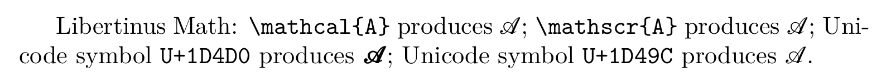
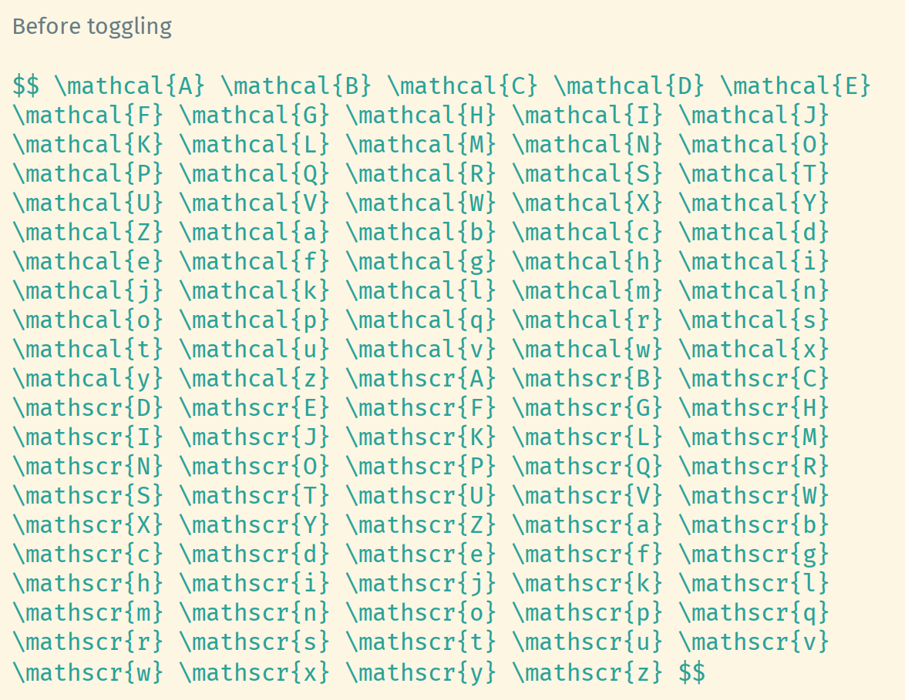
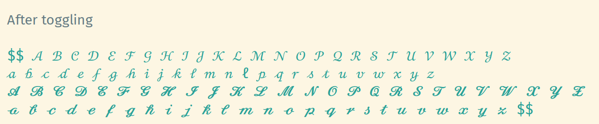
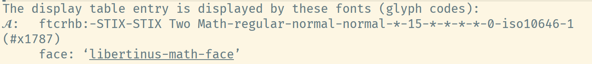
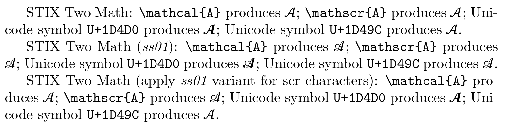

Display Unicode Characters in Emacs
Table of Contents
Motivation. I prefer Unicode symbols over LaTeX sequences. In this
old post , I discussed how to display LaTeX commands as Unicode
symbols in Emacs. However, after applying these settings, my Emacs
renders both \mathcal{A} and \mathscr{A} identically as the U+1D4D0 character from the
Libertinus Math font.
After investigation, I figure out that this behavior might be set by
my ~/.emacs.d/pretty-symbols.csv, where both LaTeX commands map to the
same Unicode character. I did this because Libertinus Math lacks
dedicated glyphs for \mathcal characters. Indeed, this issue can also
be demonstrated by the following TeX file (compiled by XeLaTeX).
\documentclass{article} \usepackage{unicode-math} \begin{document} \setmathfont{Libertinus Math} Libertinus Math: \verb|\mathcal{A}| produces $\mathcal{A}$; \verb|\mathscr{A}| produces $\mathscr{A}$; Unicode symbol \verb|U+1D4D0| produces $𝓐$; Unicode symbol \verb|U+1D49C| produces $𝒜$. \end{document}

Backgrounds
How a font selects the glyph for a given code point?
Answer. We have to distinguish the concepts of characaters, code points, glyphs and fonts. See a brief explanation in the footnote[1]; see also the related references in section Useful Links.
In the simplest case, a code point corresponds to a single glyph. For example,
U+0041is displayed as a glyph likeAin most fonts. However, a font might also provide alternative glyphs for the same code point (e.g., for ligatures), or display multiple code points as a single glyph (e.g., for accents). See more discussions in Appendix: Use OpenType Font Features.How to customize the appearance of a Unicode symbol in Emacs?
Answer. The simplest way is to customize the font for displaying the Unicode symbol via
set-fontset-font. For example, the following snippet tells Emacs to displayU+1D4D0with font STIX Two Math[2].(set-fontset-font "fontset-default" #x1D4D0 "STIX Two Math")
A slightly complicated yet more flexible way is to specify the glyph for displaying a unicode character using Display Tables. For example, the following snippet tells Emacs to display
U+1D4D1with the glyph corresponding toU+1D4D0in Libertinus Math. See the following section Appendix: Notes on Display Tables for more explanations.(aset standard-display-table #x1D4D1 (vector (make-glyph-code #x1D4D0 'libertinus-math-face)))How a LaTeX command is displayed as another Unicode symbol?
Answer. After toggling
prettify-symbols-mode, matched strings will be composed to a single character defined in the variableprettify-symbols-alist. See also my post Display LaTeX Command with Unicode Characters in Emacs.
A Simple Solution
Perhaps the simplest solution is set-font-fontset.
First, I notice that the glyphs of Libertinus Math in range (#x1D4D0
. #x1D503) are suitable for displaying \mathscr characters. So, I use
the below settings.
;; for \mathscr letters (set-fontset-font "fontset-default" '(#x1D4D0 . #x1D503) "Libertinus Math")
Then, I find that STIX Two Math contains glyphs for displaying
\mathcal characters. To avoid overriding the \mathscr characters, this
time the range is chosen as (#x1D49C . #x1D4CF).
;; for \mathcal letters (set-fontset-font "fontset-default" '(#x1D49C . #x1D4CF) "STIX Two Math")
Finally, I generate lines for my ~/.emacs.d/pretty-symbols.csv
file. Each line consists of a LaTeX command and its Unicode symbol,
looking like \mathcal{A}, 𝒜. See the Appendix: Useful Scripts for the python
script to generate these lines. It should be noted that some code
points in the range (#x1D49C . #x1D4CF) are glyphless and are manually
replaced. To ensure the consistency, the font to display these code
points has to be manually set by set-fontset-font as well, e.g.,
(set-fontset-font "fontset-default" #x212C "STIX Two Math") ;; mathcal B (set-fontset-font "fontset-default" #x2130 "STIX Two Math") ;; mathcal E (set-fontset-font "fontset-default" #x2131 "STIX Two Math") ;; mathcal F (set-fontset-font "fontset-default" #x210B "STIX Two Math") ;; mathcal H (set-fontset-font "fontset-default" #x2110 "STIX Two Math") ;; mathcal I (set-fontset-font "fontset-default" #x2112 "STIX Two Math") ;; mathcal L (set-fontset-font "fontset-default" #x2133 "STIX Two Math") ;; mathcal M (set-fontset-font "fontset-default" #x211B "STIX Two Math") ;; mathcal R (set-fontset-font "fontset-default" #x212F "STIX Two Math") ;; mathcal e (set-fontset-font "fontset-default" #x210A "STIX Two Math") ;; mathcal g (set-fontset-font "fontset-default" #x2113 "STIX Two Math") ;; mathcal o
The final result is


Appendix: Notes on Display Tables
The section 42.23.2 Display Tables and 42.23.3 Active Display Table in the manual have covered the basics of display tables. Here I add a few additional notes.
First, the function make-glyph-code does not seem to
accept anonymous faces as the value of its FACE argument, though
section 42.12 Faces mentioned that
One way to represent a face is as a property list of attributes, like (:foreground "red" :weight bold). Such a list is called an anonymous face.
Therefore, I have to explicitly define named faces by defface.
(defface libertinus-math-face '((t :family "Libertinus Math")) "Face for Libertinus Math glyphs.") (defface stix-math-face '((t :family "STIX Two Math")) "Face for STIX Two Math glyphs.")
Second, even if the current active display table maps U+1D4D1 to the
glyph described by code U+1D4D0 along with a customized face, the font
family specified in the customized face might be overridden by
fontsets specifications. For example, if the following configurations
are both applied, then U+1D4D1 will be displayed as U+1D4D0 in STIX
Two Math instead of Libertinus Math.
(aset standard-display-table #x1D4D1
(vector (make-glyph-code #x1D4D0 'libertinus-math-face)))
(set-fontset-font "fontset-default" #x1D4D0 "STIX Two Math")
You may verify this by describe-char and will see something like this.
That is, even the character is displayed with the customized face, the
font family specified by the face has been overridden by
set-font-fontset. 
Third, only the active display table takes effect and other display
tables are completely ignored. As described in the manual, the
priority is window display table > buffer display table > standard
display table. In my settings, buffers in Org mode will automatically
register their buffer display tables to display invisible lines as ↺,
while buffers in other modes seem to use the standard display table.
Appendix: Useful Scripts
A python script to write unicode characters and their code points.
with open("/tmp/unicode_chars.txt", "w", encoding="utf-8") as file: for code_point in range(0x1D49C, 0x1D4CF + 1): file.write(f"{chr(code_point)}, U+{code_point:05X}\n") for code_point in range(0x1D4D0, 0x1D503 + 1): file.write(f"{chr(code_point)}, U+{code_point:05X}\n")
A python script to generate lines for
~/.emacs.d/pretty-symbols.csv. Note that some code points in range
(#x1D49C . #x1D4CF) are glyphless. For example, the code point U+1D49D
after U+1D49C 𝒜 is glyphless in most fonts, as the right code point
for ℬ is U+212C.
with open("/tmp/script_chars.csv", "w", encoding="utf-8") as file: glyphless_char_map = { # Uppercase substitutions 0x1D49D: 0x212C, # B 0x1D4A0: 0x2130, # E 0x1D4A1: 0x2131, # F 0x1D4A3: 0x210B, # H 0x1D4A4: 0x2110, # I 0x1D4A7: 0x2112, # L 0x1D4A8: 0x2133, # M 0x1D4AD: 0x211B, # R # Lowercase substitutions 0x1D4BA: 0x212F, # e 0x1D4BC: 0x210A, # g 0x1D4C4: 0x2113, # o } # generate \mathcal mappings (uppercase) start = 0x1D49C for i in range(26): letter = i + ord("A") code = i + start if code in glyphless_char_map: code = glyphless_char_map[code] file.write(f"\\mathcal{{{chr(letter)}}}, {chr(code)}\n") # generate \mathcal mappings (lowercase) start = 0x1D4B6 for i in range(26): letter = i + ord("a") code = i + start if code in glyphless_char_map: code = glyphless_char_map[code] file.write(f"\\mathcal{{{chr(letter)}}}, {chr(code)}\n") # generate \mathscr mappings (uppercase) start = 0x1D4D0 for i in range(26): letter = i + ord("A") file.write(f"\\mathscr{{{chr(letter)}}}, {chr(i + start)}\n") # generate \mathscr mappings (lowercase) start = 0x1D4EA for i in range(26): letter = i + ord("a") file.write(f"\\mathscr{{{chr(letter)}}}, {chr(i + start)}\n")
A python script to write all LaTeX commands for verification.
with open("/tmp/check_results.org", "w") as fpr: for i in range(26): fpr.write(f"\\mathcal{{{chr(i + ord('A'))}}} ") fpr.write("\n") for i in range(26): fpr.write(f"\\mathcal{{{chr(i + ord('a'))}}} ") fpr.write("\n") for i in range(26): fpr.write(f"\\mathscr{{{chr(i + ord('A'))}}} ") fpr.write("\n") for i in range(26): fpr.write(f"\\mathscr{{{chr(i + ord('a'))}}} ")
A Lisp function to edit a given display and map (#x1D4D0 . #x1D503) to
corresponding glyphs in Libertinus Math and maps (#x1D49C . #x1D4CF)
to glyphs in (#x1D4D0 . #x1D503) in STIX Two Math. Sadly, it seems
that the characters composed by prettify-symbols-mode do not respect
display tables and apply the default fontset anyway.
(defun setup-math-display-table (current-display-table) "Configure display table for math script characters." (unless current-display-table (setq current-display-table (make-display-table))) ;; Map \mathscr (U+1D4D0 to U+1D503) via Libertinus (dotimes (i (- #x1D504 #x1D4D0)) (let ((code (+ #x1D4D0 i))) (aset current-display-table code (vector (make-glyph-code code 'libertinus-math-face))))) ;; Map \mathcal (U+1D49C to U+1D4CF) via STIX (offset mapping) (dotimes (i (- #x1D4D0 #x1D49C)) (let* ((src-code (+ #x1D49C i)) (stix-code (+ #x1D4D0 i))) ; Offset mapping (aset current-display-table src-code (vector (make-glyph-code stix-code 'stix-math-face))))))
Appendix: Use OpenType Font Features
To support ligatures, a font might have different versions of i to
display a standalone i and a ligature fi. Besides ligature, many
modern OpenType fonts include optional glyph substitution controlled
by stylistic sets. For example, by default STIX Two Math display
script characters as \mathcal characters and provides the ss01
stylistic set to display \mathscr characters. The code charts for STIX
Two Math contains detailed descriptions for OpenType features
supported by this font.
In XeLaTeX, we can choose the stylistic set by \setmathfont.
\documentclass{article} \usepackage{unicode-math} \begin{document} \setmathfont{STIX Two Math} STIX Two Math: \verb|\mathcal{A}| produces $\mathcal{A}$; \verb|\mathscr{A}| produces $\mathscr{A}$; Unicode symbol \verb|U+1D4D0| produces $𝓐$; Unicode symbol \verb|U+1D49C| produces $𝒜$. \setmathfont[StylisticSet=1]{STIX Two Math} STIX Two Math (\textit{ss01}): \verb|\mathcal{A}| produces $\mathcal{A}$; \verb|\mathscr{A}| produces $\mathscr{A}$; Unicode symbol \verb|U+1D4D0| produces $𝓐$; Unicode symbol \verb|U+1D49C| produces $𝒜$. \setmathfont{STIX Two Math} \setmathfont[StylisticSet=1,range=scr]{STIX Two Math} STIX Two Math (apply \textit{ss01} variant for scr characters): \verb|\mathcal{A}| produces $\mathcal{A}$; \verb|\mathscr{A}| produces $\mathscr{A}$; Unicode symbol \verb|U+1D4D0| produces $𝓐$; Unicode symbol \verb|U+1D49C| produces $𝒜$. \end{document}

Unfortunately, it seems that we cannot toggle OpenType features in Emacs in this way. A workaround is to use OpenType Feature Freezer to manually modify a font and let selected features on by default.
Useful Links
- A discussion on choosing a particular glyph
- Aad, E. (2015). How to set the glyph of a unicode character? Emacs Stack Exchange. https://emacs.stackexchange.com/questions/6052/how-to-set-the-glyph-of-a-unicode-character
- Emacs lisp manual covering glyphs and display tables
- GNU. (2025). GNU Emacs Lisp Reference Manual (Emacs version 30.1). https://www.gnu.org/software/emacs/manual/html_node/elisp/Character-Display.html
- A post about font basics in Emacs
- Idiocy. (2019). Emacs, fonts and fontsets. https://idiocy.org/emacs-fonts-and-fontsets.html
- A Stack Overflow discussion on code points and glyphs
- Amery, M. (2014). What's the difference between a character, a code point, a glyph and a grapheme? Stack Overflow. https://stackoverflow.com/questions/27331819/whats-the-difference-between-a-character-a-code-point-a-glyph-and-a-grapheme
- A brief post on distinguishing code points and glyphs
- Dkf. (2019). Characters, glyphs, code-points, and byte-sequences. https://wiki.tcl-lang.org/page/Characters%2C+glyphs%2C+code-points%2C+and+byte-sequences
- A post with in-depth introduction on what are code points and how they are rendered
- Litherum. (2017). Relationship Between Glyphs and Code Points. https://litherum.blogspot.com/2017/05/relationship-between-glyphs-and-code.html
- A post about using OpenType feature freezer
- Catalfamo, D. (2022). Exploring OpenType Font Features. https://blog.lambda.cx/posts/opentype-font-exploration/
Footnotes:
The following explanations are summarized by AI.
- Code Point. A numerical identifier in the Unicode standard (e.g., U+1D4D0 = 𝓐).
- Character. An abstract concept, like "MATHEMATICAL BOLD SCRIPT CAPITAL A".
- Glyph. The visual representation (shape) of a character on a screen.
- Font. A collection of glyphs and metadata for rendering text.
To list all font families in Emacs, go to a buffer and enable
the lisp-interaction-mode. Then, navigate to the end of the following
form and press C-j.
(mapconcat 'identity (font-family-list) "\n")
Once the font family name is obtained, use (describe-font name) to
inspect more info about the font, like the file path.